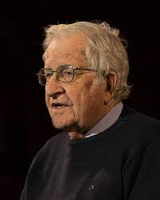
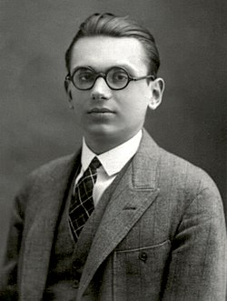
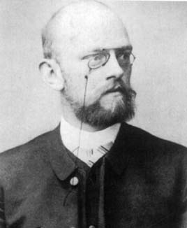

Selamat Datang Adindaku!
Teori bahasa membicarakan tentang bahasa formal atau biasa disebut dengan "formal language", terutama untuk kepentingan perancangan kompilator (compiler) dan pemroses naskah (text processor).Bahasa formal merupakan kumpulan kalimat. Semua kalimat dalam sebuah bahasa dibangkitkan oleh sebuah tata bahasa (grammar) yang sama. Sebuah bahasa formal bisa dibangkitkan oleh dua atau lebih tata bahasa berbeda. Dikatakan bahasa formal karena grammar diciptakan mendahului pembangkitan setiap kalimatnya.
Pada tahun 1931, KurtGdel mempublikasikan teori ketidak lengkapan dimana membuktikan prosedur/algoritma yang dikehedaki David Hilbert tersebut tidak akan pernah ada. Otomata bermula sebelum komputer ada pada teori di bidang sistem logika matematika atau formal, ilmuwan David Hilbert telah mencoba menciptakan algoritma umum untuk pembuktian persoalan matematika secara otomatis yaitu mampu menentukan salah benarnya sembarang prosisi matematika. Kurt GÖdel membangun rumus pada bilangan bulat yang memiliki pernyataan-pernyataan definisi yang tidak dapat dibuktikan maupun dibantah di dalam sistem logika yang mungkin dibangun manusia. Sekitar tahun 1950-an, Noam Chomsky menciptakan model matematika sebagai sarana untuk mendeskripsikan bahasa serta menjawab pertanyaan-pertanyaan di atas. Saat ini dimulai pendalaman bidang bahasa komputer. Noam Chomsky mengemukakan perangkat format disebut grammar untuk memodelkan properti-properti bahasa. Tata bahasa (grammer) bisa didefinisikan sebagai kumpulan dari himpunan- himpunan variabel, simbol-simbol, terminal, simbol awal, yang dibatasi oleh aturan-aturan produksi.
Otomata adalah mesin abstrak yang dapat mengenali (recognize), menerima (accept), atau membangkitkan (generate) sebuah kalimat dalam bahasa tertentu. Otomata bermula sebelum komputer ada pada teori di bidang sistem logika matematika atau formal, ilmuwan David Hilbert telah mencoba menciptakan algoritma umum untuk pembuktian (seluruh) persoalan matematika secara otomatis yaitu mampu menentukan salah benarnya sembarang prosisi matematika.

Dalam segi grammar (tata bahasa), bahasa memungkinkan penyampaian gagasan dan pemikiran, tanpa itu komunikasi akan sulit terjadi. Dalam lingkungan pemprograman komputer, bahasa pemprograman bertindak sebagai sarana komunikasi antara manusia dan permasalahannya dengan komputer yang dipakai untuk membantu memperoleh pemecahan. Suatu solusi untuk suatu masalah akan menjadi lebih mudah bila bahasa pemprograman lebih dekat dengan permasalahan tersebut. Oleh karena itu, bahasa harus memiliki konstruksi yang merefleksikan masalah dan independen dari komputer yang dipergunakan. Komputer digital, disisi lain, hanya menerima dan memahami bahasa tingkat rendah mereka sendiri, terdiri dari deretan nol dan satu, yang sulit dipahami oleh manusia.
Disamping itu, Istilah Otomaton sebagai bentuk tunggal dan Otomata sebagai bentuk jamak. Teori Otomata adalah teori tentang mesin abstrak yang : 1. bekerja sekuensial 2. menerima input 3. mengeluarkan output Pengertian mesin bukan hanya mesin elektronis/mekanis saja melainkan segala sesuatu (termasuk perangkat lunak) yang memenuhi ketiga ciri di atas. Penggunaan automata/Otomata pada perangkat lunak terutama pada pembuatan kompiler bahasa pemrograman.Secara garis besar ada dua fungsi automata dalam hubungannya dengan bahasa, yaitu : - fungsi automata sebagai pengenal (RECOGNIZER) string-string dari suatu bahasa, dalam hal ini bahasa sebagai masukan dari automata - fungsi automata sebagai pembangkit (GENERATOR) string-string dari suatu bahasa, dalam hal ini bahasa sebagai keluaran dari automata.Mesin pengenal bersifat deterministik bila dalam setiap konfigurasi, hanya ada satu kemungkinan yang dapat dilakukan mesin, jika tidak mesin pengenal bersifat non deterministik.
Selain bahasa juga bisa menggunakan otomata sebagai media, otomata adalah ilmu yang mempelajari mengenai mesin abstrak, bisa disebut pula adalah suatu model abstrak dari komputer digital yang dapat menerima input secara sekuensial dan dapat mengeluarkan output. Setiap otomata memiliki beberapa fungsi dasar, dapat membaca input berupa string dari alphabet yang diberikan dari input file. Otomata merupakan suatu sistem yang terdiri dari sejumlah berhingga status, dimana setiap status tersebut menyatakan informasi mengenai input yang lalu, dan dapat pula dianggap sebagai mesin memori. Input pada mesin otomata dianggap sebagai bahasa yang harus dikenali oleh mesin.

Vending Machine merupakan penerapan dari bidang ilmu Teori Bahasa dan Automata yang dapat menjual barang atau kebutuhan manusia secara otomatis. Sistem penjualan dengan Vending Machine tidak membutuhkan operator, pembeli dapat memilih sendiri barang yang diinginkan. Teori Bahasa dan Automata merupakan salah satu komponen bidang ilmu informatika yang mendasari ide dan model dari sistem komputasi. Pemodelan Vending Machine dengan metode finite state automata diharapkan dapat memberikan kemudahan bagi konsumen dalam memenuhi kebutuhan. Pada penelitian ini, pemodelan Vending Machine diimplementasikan pada alat penjualan minuman. Metode pemodelan Vending Machine dengan Finite State Automata untuk menjelaskan logika penerimaan masukan berupa koin pada mesin sampai mendapatkan minuman sesuai dengan pilihan. Hasil dari penelitian ini adalah simulasi/pemodelan alur komputasi yang berjalan pada Vending Machine dan desain interface Vending Machine.
Vending Machine merupakan kios elektronik yang menjual berbagai kebutuhan manusia. Biasanya berbentuk kotak besi yang bagian depannya dilapisi kaca agar produk yang dijual dapat dilihat oleh konsumen. Salah satu contoh penerapan automata adalah dapat menjual barang-barang untuk konsumen tanpa adanya seorang operator. Sebuah Vending Machine biasanya menjual satu macam barang, misalnya minuman, koran, makanan ringan dan lain sebagainya. Jika konsumen menginginkan barang yang ada di Vending Machine tinggal memasukan sejumlah uang sesuai harga yang tertera kemudia pilih barang yang diinginkan maka barang segera didapatkan
Model switch on/off digambarkan sebagai berikut : Model tersebut mengingat apakahswitch berada dalam state “on” atau state “off”. Model memungkinkan user untuk menekan tombol yang memiliki pengaruh berbeda tergantung pada keadaan switch: -Jika switch berada dalam state“off” maka setelah tombol ditekan state berubah menjadi “on”. -Jika switch berada dalam state“on” maka setelah tombol ditekan state berubah menjadi “off”.

Mesin jual otomatis, otomat pengecer (Inggris:Vending machine) adalah mesin yang dapat mengeluarkan barang-barang seperti makanan ringan, minuman ringan seperti minuman soda, alkohol, rokok, tiket lotre, produk konsumen dan bahkan emas dan permata untuk pelanggan secara otomatis.
Push button switch (saklar tombol tekan) adalah perangkat / saklar sederhana yang berfungsi untuk menghubungkan atau memutuskan aliran arus listrik dengan sistem kerja tekan unlock (tidak mengunci). ... Sebagai device penghubung atau pemutus, push button switch hanya memiliki 2 kondisi, yaitu On dan Off (1 dan 0).